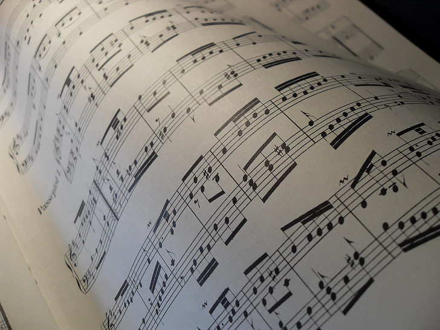

I used to hate classical songs, but in high school I had a conversion. This piece by Chopin is one of my favorites.

Pros:
- Shorter length
- Repetitive patterns in left hand
- Repeats
Cons:
- Many accidentals
- Tricky fingerings
- Faster tempo
This piece is harder than the HTTYD medley, but it has the same difficulty rating because it’s shorter and takes about the same amount of time to learn. This piece is wistful and brings to mind a swirling waltz in a grand ballroom.